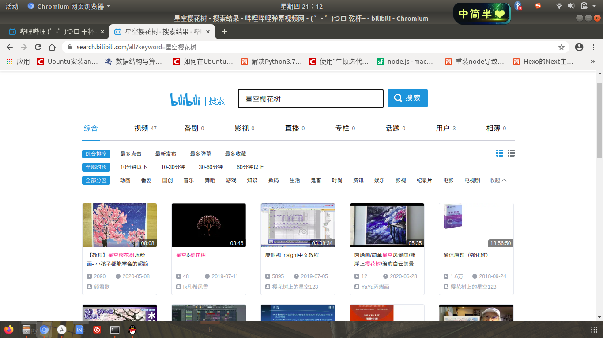

以后的博客将发布在新的地址：https://fx0809.gitee.io
原地址https://fuhanshi.github.io 也算是陪伴我走过了一半的大学时光吧，总有些感慨要表达一下
持续发了两年的干货，今天作为最后一次，发点不那么”干”的内容
######## 华丽的分割线#########
时光飞逝，转眼间大学已经毕业
我仍记得当初写下人生第一篇博客并成功发布时的喜悦
翻看自己以前写的博客
发现这些不仅仅是博客，更是一段美好的回忆
与其说写博客是为了记录知识，不如说是记录生活
因为，未来会有一天，当我不经意间读到博客中的某段话
记忆就会回溯
所有开心的、不开心的，欣喜的、苦闷的情绪都将涌来
仿佛那就在昨天
我记得，那时为了准备期末考，我连续整理了一天”多元统计分析”简答题笔记
我也记得有一篇博客，从下课写到黑夜降临
期间人来人往
最后抬头却已不见一人
我还记得那里的一年四季
那一年的夏天，和你们一起熬夜写报告、写论文
我那天早早的起来，推开窗户，看向操场
太阳还没升起，我朝着宿舍楼的方向走去
那代表了一半大学时光的终结
吉林的冬季，室内室外两重天
和”两个寝室”的室友们躺在寝室，吃着零食，有一搭无一搭的聊着
是最惬意的时候
时而探讨”大事”
时而打打闹闹
每当节日便会出动
聚餐
K歌，即使不在调上也还是怡然自乐
还有那几个傻子
那天在操场躺了一夜
看着繁星，数着世界
在理科楼奋斗的那段日子
每天讲着自己的进度
每天倒数着距离考研还有多少天
每天为了能多在理科楼学一会，和楼下的大爷斗智斗勇
那段时间，几乎每天我们都是最后一批离开的
数学很难，算法很难
政治很难背 ，单词很难记
可回头一看，那些日子啊
全是喜悦
全是美好
因为，
…
那天在路上，我遇到了楼下那个瘦瘦的大爷
嗯，他问我去哪儿
要去哪儿呢？
…
往事如烟
回首已经是沧海桑田
希望我们跃入人海
各自灿烂
